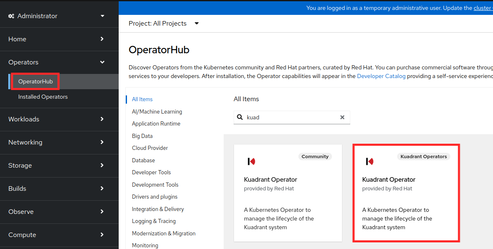
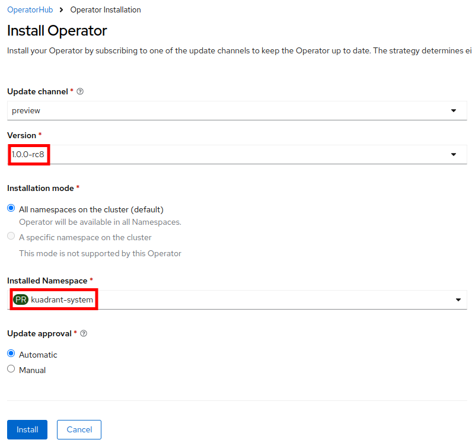
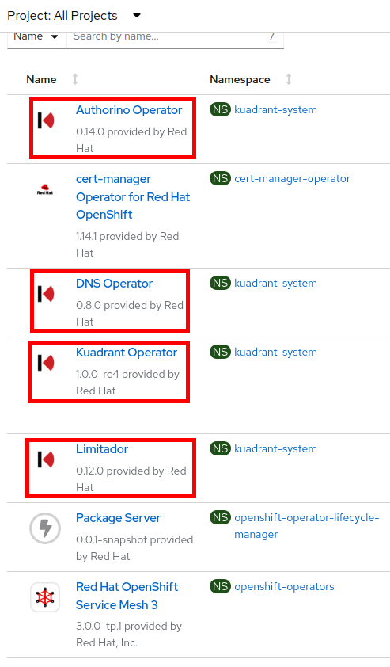
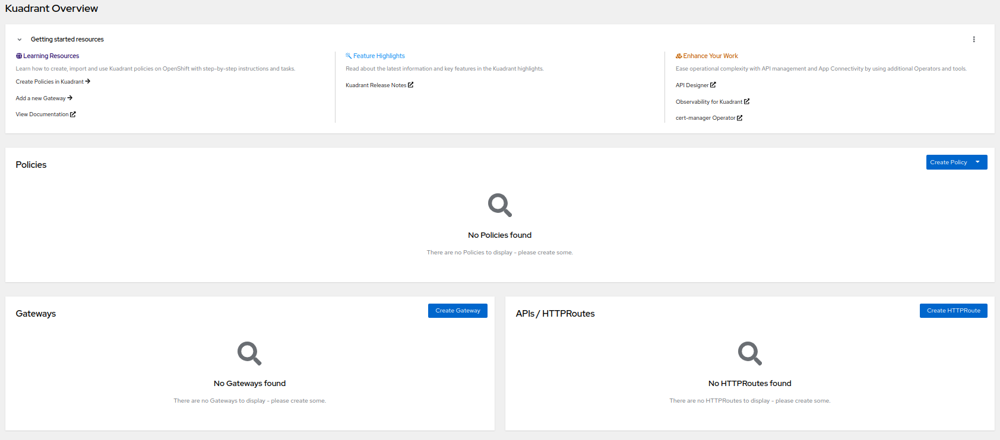

Install Red Hat Connectivity Link on Red Hat OpenShift cluster
In this lab, you install and setup Red Hat Connectivity Link operator and trigger a Kuadrant deployment.
Install Connectivity Link
-
Create kuadrant-system namespace as shown below:
oc create ns kuadrant-systemYou should see output as follows:
namespace/kuadrant-system created -
Setup catalog source for Red Hat Connectivity Link Operator by applying the yaml settings using below command:
oc apply -f -<<EOF apiVersion: operators.coreos.com/v1alpha1 kind: CatalogSource metadata: name: kuadrant-operator-catalog namespace: kuadrant-system spec: sourceType: grpc image: quay.io/kuadrant/kuadrant-operator-catalog:v1.0.0-rc8 displayName: Kuadrant Operators publisher: grpc updateStrategy: registryPoll: interval: 45m EOFYou should see output as follows:
catalogsource.operators.coreos.com/kuadrant-operator-catalog created -
Navigate to the Red Hat OpenShift cluster. From the Administrator view, select Operators > OperatorHub from side panel and search Red Hat Connectivity Link. Select the Kuadrant Operator highlighted in below screenshot and click Install
-
Select kuadrant-system namespace as shown in below screenshot and click Install.
 -
Check the status of the installation using below command. When ready, the status will change from "installing" to "Complete."
oc get installplan -n kuadrant-system -o=jsonpath='{.items[0].status.phase}' -
Observe the Connectivity Link operator is installed along with it’s dependencies in the Red Hat Openshift console’s Installed Operators section.
-
Below are the components installed:
-
Authorino(Enforcement Component for AuthPolicy)
-
DNS Operator (Enforcement Component for DNSPOlicy)
-
-
-
Deploy Connectivity Link
-
To trigger your Connectivity Link deployment, create the Custom Resources using the following command:
oc apply -f -<<EOF apiVersion: kuadrant.io/v1beta1 kind: Kuadrant metadata: name: kuadrant namespace: kuadrant-system EOFYou should see the output as follows:
kuadrant.kuadrant.io/kuadrant created -
Wait for Kuadrant to be ready as follows:
oc wait kuadrant/kuadrant --for="condition=Ready=true" -n kuadrant-system --timeout=300sYou should see the output as follows:
kuadrant.kuadrant.io/kuadrant condition met -
Enable Kuadrant plugin to view components configuration status easily that we would perform in coming sections.
-
You can also refer to this arcade link to see step by step instructions on enabling the plugin.
-
Or you can refer these steps:
-
Navigate Red Hat OpenShift cluster and from Administrator view, click on Home → Overview.
-
Under Status section, click on Dynamic Plugins → View All.
-
You will see kuadrant-console-plugin marked as disabled.
-
Click on the pencil icon and then choose Enabled and click Save.
-
Refresh the page in a couple of minutes, and you will see the Kuadrant menu on the left hand side menu.

-
Click on Overview option and you shall see a dashboard that will show you kuadrant’s overview. You this dashboard to track status of policies/gateways/http routes that we shall configure in upcoming lab sections.

-